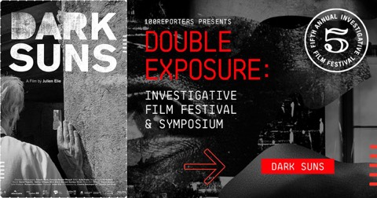

About the film
Starring Michael Keaton, Mark Ruffalo, Rachel McAdams, Liev Schreiber, Brian d’Arcy James and Stanley Tucci, SPOTLIGHT tells the riveting true story of the Pulitzer Prize-winning Boston Globe investigation that would rock the city and cause a crisis in one of the world’s oldest and most trusted institutions. When the newspaper’s tenacious “Spotlight” team of reporters delve into allegations of abuse in the Catholic Church, their year-long investigation uncovers a decades-long cover-up at the highest levels of Boston’s religious, legal, and government establishment, touching off a wave of revelations around the world. Directed by Academy Award-nominee Tom McCarthy, SPOTLIGHT is a tense investigative thriller, tracing the steps to one of the biggest crime stories in modern times.
At the festival
- 2015 Opening Night · Wednesday, September 30, 2015 · 6:00 PM · National Portrait GalleryPost screening panel discussion with Martin Baron, Michael Rezendes, Sacha Pfeiffer, Walter Robinson, moderated by David Simon.
More films on these topics

Dark SunsJulien Elie2019 · 154 min The Oligarch and the Art DealerAndreas Dalsgaard2026 · 120 min
The Oligarch and the Art DealerAndreas Dalsgaard2026 · 120 min Killing AnnaSam Benstead2026 · 76 min
Killing AnnaSam Benstead2026 · 76 min The Black SwanMads Brügger2025 · 90 min
The Black SwanMads Brügger2025 · 90 min Cover-UpLaura Poitras, Mark Obenhaus2025 · 117 min
Cover-UpLaura Poitras, Mark Obenhaus2025 · 117 min Fox Chase BoyGerad Argeros, Kaya Moon Dillon2024 · 27 min
Fox Chase BoyGerad Argeros, Kaya Moon Dillon2024 · 27 min